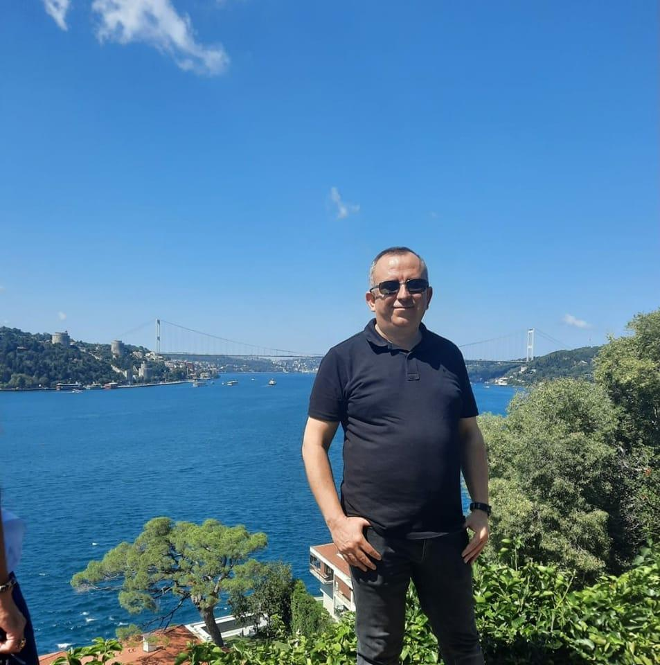

Av. Asil Aydın
Uzmanlık: Ticaret Hukuku, İş Hukuku, Aile Hukuku
Telefon: +90 541 266 79 37
E-posta: avukatasilaydin@gmail.com
Avukat Asil Aydın, İstanbul Üniversitesi Hukuk Fakültesi mezunudur. Mesleki hayatına 2001 yılında başlamış ve çeşitli özel hukuk alanlarında uzmanlaşmıştır. Özellikle şirket danışmanlığı, işçi-işveren ilişkileri, boşanma ve mal rejimi davalarında yoğun deneyime sahiptir.
Asil Aydın, müvekkillerine sadece dava süreçlerinde değil, aynı zamanda önleyici hukuk alanında da destek vermektedir. Hukukun sürekli değişen doğasına uyum sağlayarak, etik ilkelere bağlı, güvenilir ve etkili çözümler üretmeye odaklanmaktadır.